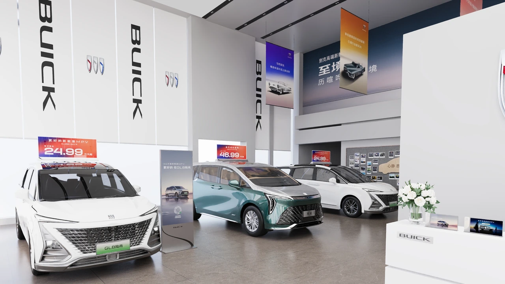
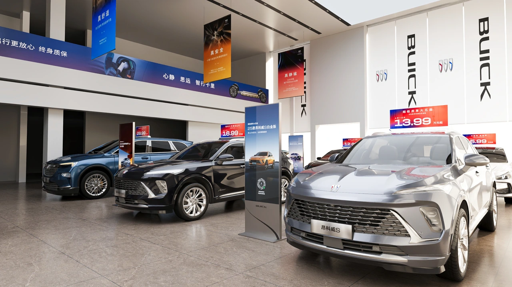
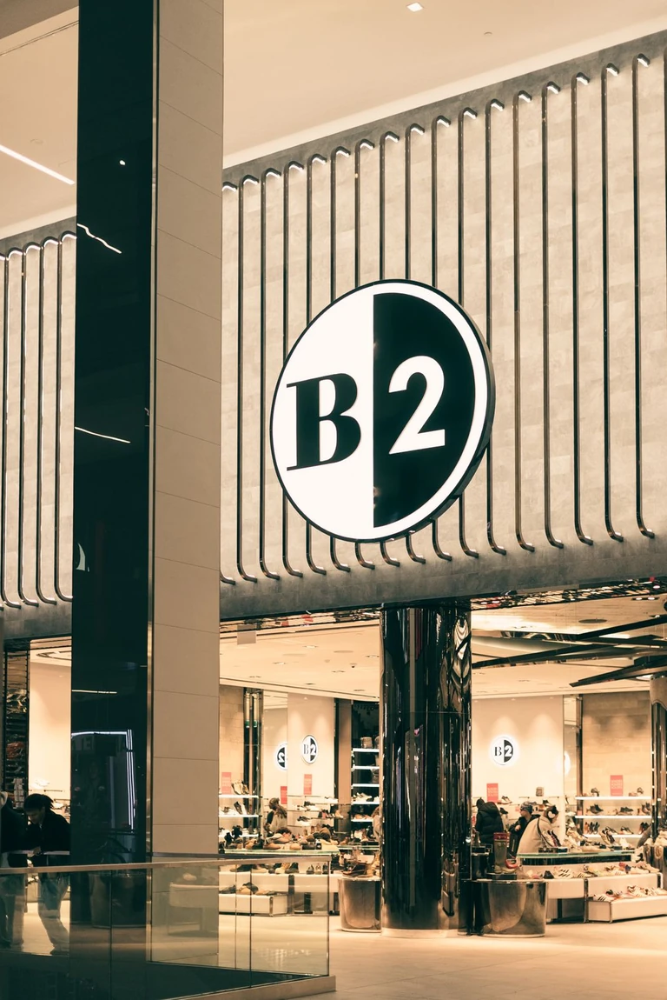

本地预览
别克 POSM
BUICK · 终端物料
门店陈列与销售物料，涵盖接待桌、车型立牌、指引牌、价格牌和单页架。

门店与接待
从门店全景看，蓝色横条和上方吊旗较早进入视线。车辆身边的低台和小牌把车型信息留在走近之后阅读。



照片将简明标识抬过通行人群和低位陈列。门店全景也把蓝色横条与吊旗放在较高处，把车旁低牌留给近距离阅读。
Erik Mclean · Pexels 许可单页架 · 成品效果
单页架将车图置于斜面上半部，下方弧线顺着灰色面板向底座收拢。灰棚原作的斜光把面板和底座的转折照出来。